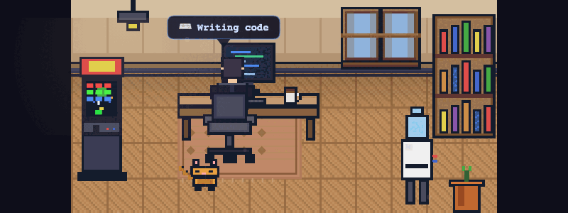

A 27KB pixel art office for Cursor's agent mode
Originally posted on LinkedIn, March 16, 2026.
I use Cursor's agent mode all day, and I kept checking the terminal to see whether the agent was still working or had finished. So I built a pixel art office that sits in the bottom panel and reacts to what the agent is doing.
The character types at the desk when the agent writes code, walks around and pets the cat when idle, and celebrates when a build passes. Every object is clickable, including the lamp, window, arcade cabinet, bookshelf, and water cooler.
It works by watching Cursor's JSONL transcript files. It's read-only, requires no API keys, and doesn't patch Cursor.
The whole thing is 27KB. Every sprite is drawn pixel by pixel in TypeScript, with no image files at all. I wanted to see how far I could push canvas-based pixel art with zero assets.
There's also a plugin API for adding custom furniture or new backgrounds. It's available as a Cursor extension and as an open-source project.
